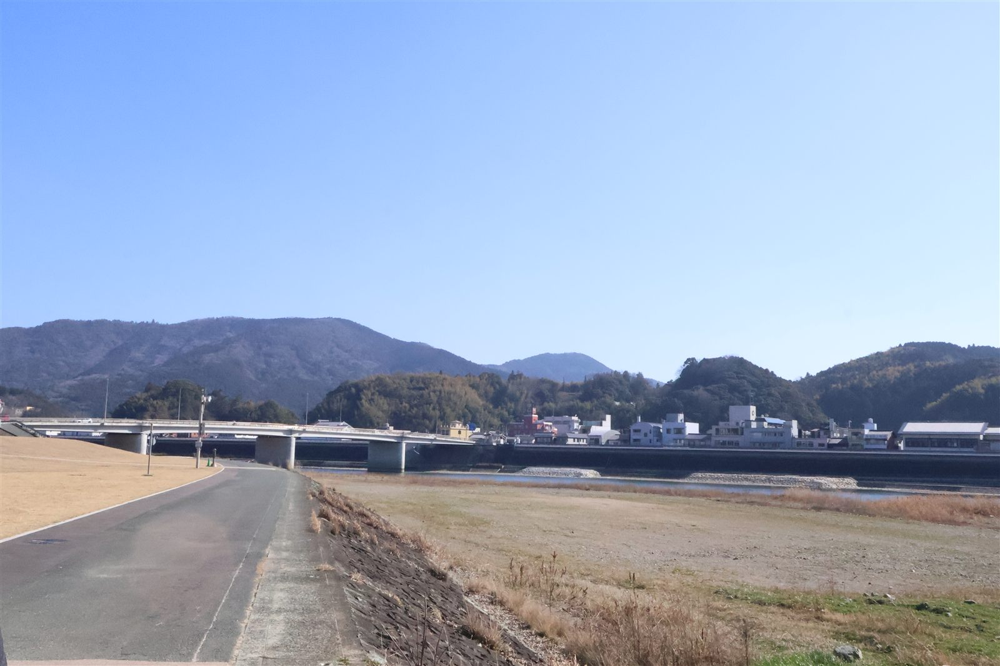

2026/04/03 ・ 大洲の視点 ・ 出典: 大洲市役所、note

大洲市内で気軽に立ち寄れる湯というと、内子町の竜王公園や八幡浜市のみなと湯を思い浮かべる人が 多いかもしれない。肱川の奥にある小薮温泉も名前は知られているが、道の駅ひじかわのさらに奥にある 日帰り温泉「鹿野川荘」は、地元でも意外と知らない人がいるのではないだろうか。
鹿野川荘は肱川町の鹿野川ダム湖畔にある温泉施設で、日帰り入浴も宿泊も可能。地元の食材を使った 料理も出しているそうで、大洲市街地からは少し距離があるぶん、静かに過ごせる穴場になっている。
鹿野川荘のある肱川町つながりで、もう一つ紹介したいのが地酒「風の里」。愛媛の日本酒はもともと 甘口で知られていて、西条市の「石鎚」も甘い酒として有名だが、大洲市肱川町の「風の里」や 内子町の「隠し剣」は、それよりさらに甘いという評判をnoteの記事で見かけた。
愛媛は醤油も甘口が主流な土地柄なので、味覚の傾向としては筋が通っているのかもしれない。 温泉でひと風呂浴びたあと、肱川町の地酒を試してみる、というのも大洲の楽しみ方の一つになりそうだ。